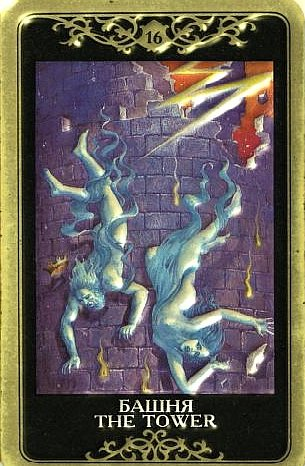

Ситуация назрела давно. Это тот «конец света», которого ждали.
Взрыв или слом после предшествовавшего нагнетания.
В определенном смысле это кара за то, что было до того.
По ней происходит Изгнание Дьявола (предыдущий Аркан). Стародавнее название Башни – Дом Божий.
Над этим стоит подумать. Это Дом Дьявола (так карта называлась в средневековой Италии), превращающийся под ударом небесной молнии в место присутствия Бога.

Происходит утрата достигнутого равновесия, опиравшегося на ложные основания.
Башня – санитар эволюции, она исцеляет нашу жизнь от всего, что ее отравляет, разрушает застойные ситуации, мешающие росту.
При этом удары судьбы могут показаться такими же трагичными и непостижимыми, как это видится ребенку, которого тащат к врачу удалять больной зуб.
Мало кто воспринимает эти очистительные операции с восторгом, но они все-таки нужны.
Один период жизни сменяется другим, причем происходит это весьма стремительно, а потому небезболезненно.
Это может быть как просто реактивное наведение порядка по типу зачистки, так и тотальный развал существующей на сегодняшний день ситуации (по крайней мере, в области задаваемого вопроса).
Башня вырывает человека из ограничивающих его обстоятельств, нарушает давно существующее положение вещей. Иногда это полностью соответствует ожиданиям и даже желаниям вопрошающего, так что Башня не всегда так уж плоха.
Рядом с позитивными картами она сообщает о распаде существующего зла, предвещая конец черной полосы в жизни и избавление от тяжелого груза. Пора входить в будущее под грохот обломков прошлого.
Другое дело, если все это нисколько не соответствует ни ожиданиям, ни желаниям.
Тогда это гром среди ясного неба, своего рода болезненное откровение, подрывающее самые основы, на которых мы стояли, коренная ломка прежних воззрений на жизнь.
Важно, что сам «удар» наносится силами, с которыми не стоит и пытаться совладать. Еще один существенный момент – нет смысла заниматься восстановлением погибшего по Башне, это бесполезно.
На разных позициях расклада и в зависимости от ситуации Башня меняет свой масштаб и значение.
Это могут быть и внешние разрушения, и внутренние потрясения.
На будущее она скорее служит предупреждением, что то, что мы уже долго считаем стабильным и безопасным, может вдруг пошатнуться. Назревают коренные перемены, в воздухе пахнет грозой.
В качестве индикатора прошлого она говорит, что отжившее рухнуло и не возродится.
Иногда речь идет о внутренних вещах – закосневших убеждениях или жизненных принципах, а иногда мишенью становится что-то более осязаемое, но в любом случае по Башне разваливаются как раз те структуры и условности, которые мы уже превзошли.
На самом деле старое ломается потому, что пришло время, уже зреет новое, что-то более творческое, живое и жизненное, а старое уже отжило, и реанимировать его – пустая трата времени и сил. Когда шок проходит, мы обнаруживаем, что избавились от балласта.
По Башне мы расчищаем мусор, выкидываем старое и ненужное, уничтожаем препятствия.
Катастрофические изменения в делах вопрошающего, разрушение дома, дела, брака (в зависимости от темы вопроса и окружающих карт), иногда – заключение в тюрьму.
В чисто бытовом смысле Башня часто означает конфликт, даже скандал, однако это гроза, после которой воздух становится чище. Возможно вовлечение в какие-то действия агрессивного характера, в трудные и/или опасные ситуации.
По Башне проходят непредвиденные разрушения, аварии, поломки, несчастные случаи, иногда - нападения. В глобальном масштабе она отражает войны, стихийные бедствия, взрывы, теракты, революции, крах режима, разрушение существующего порядка. Авиакатастрофы, кораблекрушения.
Считается, что Башня, появляясь в раскладе, определяет значение других карт в негативную сторону.
ЛИЧНЫЕ ОТНОШЕНИЯ
Здесь, как и во всем другом, Башня несет слом и освобождение. А уж ощущает человек больше «слом» или больше «освобождение» - это другой вопрос.
Иногда по Башне проходит просто конфликт, а иногда – неукротимый сексуальный импульс, иногда одно переходит в другое...но в любом случае это - взрыв и высвобождение долго копившихся и подавлявшихся чувств.
Если только что-то держали под спудом, обуздывали, терпели, молчали, ждали, то Башня - это час взрыва.
Направление трактовки Башни иногда можно угадать именно по тому, предшествовал ли ей этот вот период «ядерного сдерживания», тикал ли часовой механизм.
Предыдущий характер отношений тоже может дать подсказку. Если ситуация ощущалась как тупиковая, а отношения (или их отсутствие) по характеру сильно напоминали самому человеку тюрьму, Башня - это «вышиб дверь и вышел вон».
Иногда она переживается позитивно, примерно как обреченный на пожизненное заключение переживает негаданное разрушение тюрьмы при землетрясении – он выбирается на свободу, не испытывая никакой ностальгии в отношении обломков.
Башня может означать крах прежних взаимоотношений, представлявшихся стабильными и неизменными, или очень суровое испытание любви или дружбы, после которого мнение о близких меняется.
Старинные слова «крушение как результат неправильных суждений и злоупотребления свободной волей» абсолютно точны, и прочувстовать, до какой степени это так, можно лишь пройдя все перепитии Башни.
Еще одно ее значение – «очищающий шторм». И еще одно – «пепелище». Какое из них ближе к истине в данном случае еще предстоит выяснить.
Кризис брака, развод.
По Башне часто происходят некие «разоблачения» - долго скрываемая правда прорывается наружу, возникает внезапное понимание истинной сути событий.
Это может быть и осознание собственного недовольства браком, и факт измены, и прочие неожиданные удары («все смешалось в доме Облонских»).
По Башне происходит раскрытие секретов и развеивание иллюзий.
Башня несет немалую сексуальную энергию. Молния иногда принимает вид зодиакального знака Скорпиона, а сама башня рассматривается как фаллический символ. Она символизирует могучую оргазмическую силу эмоций, которые долго были сдерживаемы, но наконец получили свободу. Поэтому иногда по Башне проходит внезапная любовь, которая «выскочила перед нами, как из под земли выскакивает убийца в переулке, и поразила нас сразу обоих!
Для одинокого человека, живущего с ощущением полной стагнации и уставшего от одиночества, Башня – карта почти оптимистичная.
Она говорит, что что-то да произойдет! Не факт, что это будет большое счастье, но во всяком случае скучное и спокойное существование закончится, из темницы оцепенения удастся вырваться.
У современного таролога, пишущего под псевдонимом АлмаЗ, по поводу Башни сказано следующее: «Карта может представлять период, когда человек решается сделать то, чего никогда не делал, следуя принципу: сейчас или никогда. Те, кто вступил в брак с неподходящим человеком, уходят; холостые влюбляются и связывают себя узами брака; женщины, никогда не имевшие детей, используют последний шанс зачать ребенка, а те, кто годами трудился на скучной работе, увольняются и пешком идут в Гималаи. Ради счастья и роста все стандартное должно уйти, чтобы на смену ему пробудилось то, что так долго дремало в глубинах нашего существа».